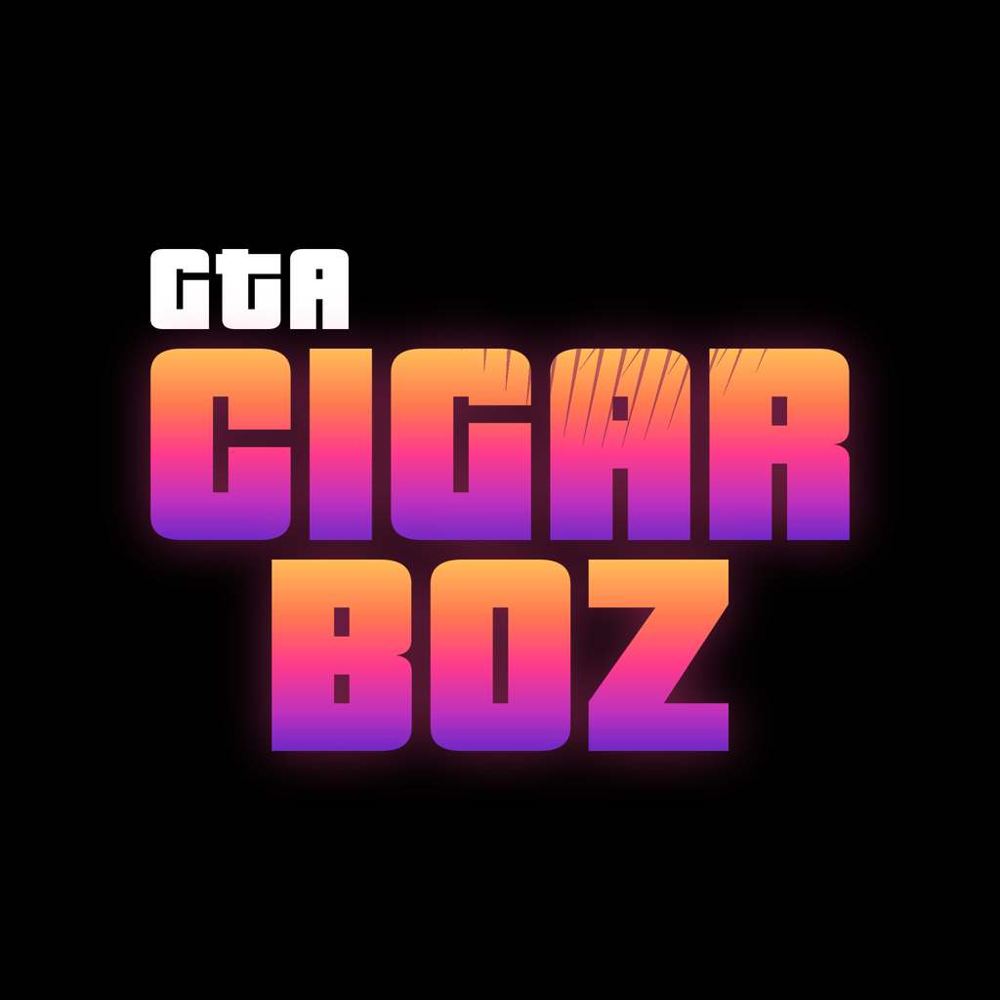

Tudo sobre GTA 6, todo dia.
O GTA Cigarboz é um canal brasileiro de fãs. Publicamos vídeos curtos com as notícias, os reviews, as gameplays e os detalhes de GTA 6, com manchete e legenda em português.

O que você encontra aqui
Notícias
Anúncios da Rockstar, datas, notas da crítica e tudo o que sai sobre o jogo, sempre com a fonte.
Reviews
Os melhores trechos das análises em português, como IGN Brasil e Omelete, com crédito ao canal original.
Gameplays
Momentos de gameplay já publicados: gráficos, mundo aberto, missões e reações, sem spoiler da história.
Contagem regressiva
Vídeo diário com cenas dos trailers oficiais até o lançamento.